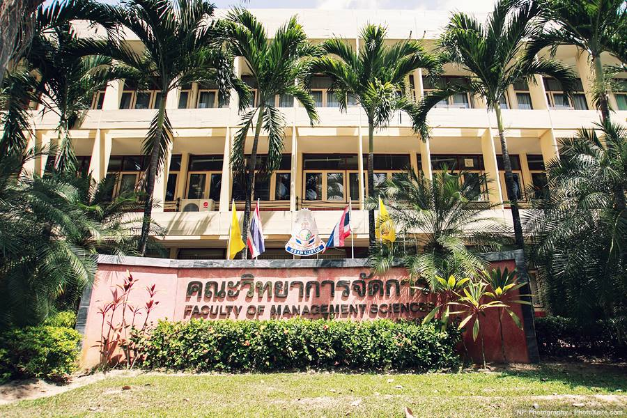
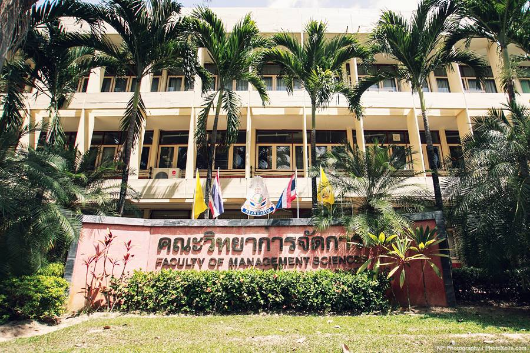

Our Diary

Sarocha Diary.
No one can go back in time to change what has happened, so work on your present to make yourself a wonderful future

Thanyathon Diary.
Friendship isn't about whom you have known the longest. It's about who came and never left your side.

Winidchai Diary.
You are never too old to set another goal or to dream a new dream.

 



Sarocha Diary.
สวัสดีค่ะหนูชื่อนางสาวสโรชา ศรีประยูร อายุ 21 ปี เป็นนักศึกษามหาวิทยาลัยสงขลานครินทร์ วิทยาเขตหาดใหญ่ กำลังศึกษาอยู่ชั้นปีที่ 2 คณะวิทยาการจัดการ สาขาระบบสารสนเทศค่ะ
Skills
Education
Experience
Activity
ตั้งแต่ได้ก้าวเท้าเข้ามาในรั้วมหาลัย ในความคิดของหนู หนูคิดว่ามันคงจะมีแต่ความรัก ความสนุก เฮฮา แต่ในความจริงชีวิตในมหาลัยไม่ได้เป็นอย่างที่คิด ไม่ได้สวยงามเลย การเข้ามาอยู่ในมหาลัยเหมือนได้ฝึกประสบการณ์ ได้เรียนรู้ในการเติบโตเป็นผู้ใหญ่มากขึ้น ไม่ว่าจะเป็นเรื่อง การคบเพื่อน การเข้าสังคม การเรียน สิ่งเหล่านี้ถ้าหากเราผ่านพ้นมันมาได้ก็จะทำให้เราได้เรียนรู้การเติบโตเป็นผู้ใหญ่มากขึ้น วันแรกที่เข้ามาในรั้วมหาลัยเป็นอะไรที่ตื่นเต้นมาก ได้แต่คิดว่าเราจะพบเพื่อนมากน้อยแค่ไหน นิสัยจะดีหรือไม่ดี แต่แล้วสิ่งที่ไม่อยากเจอก็ต้องเจอ นั้นคือ อุปสรรคในการคบเพื่อน ซึ่งการคบเพื่อนครั้งแรกของการเข้าในมหาลัยนั้น ก็ไม่ได้คิดอะไรมากมาย เพราะคิดว่าเพื่อนที่เราคบ เราเชื่อใจเขา เรารักเขา สนิทกันก่อนเข้ามหาลัย และได้มาเรียนอยู่คณะเดียวกัน สาขาเดียวกันคงช่วยเหลือดูแลกันตลอด แต่สุดท้ายเรื่องไม่เคยคิดว่าจะเกิดขึ้นก็เกิด เมื่อถึงช่วงที่แตกหักกัน ขีวิตก็รู้สึกเคว้งคว้าง โดดเดี่ยวบ้างในบางครั้ง จนมีเพื่อนคนนึงที่ดึงเราออกมาจากความอ้างว้างนั้น ทำให้เรากลับมาสดใสได้อีกครั้ง มีสังคมใหม่ที่ดี ประสบการณ์เหล่านี้เป็นแค่บางส่วนในชีวิตมหาลัย ยังมีอีกหลายๆอย่างที่เราต้องพบเจอ และพร้อมจะฟันฝ่าอุปสรรคเหล่านั้นไป
Thanyathon Diary.
สวัสดีค่ะหนูชื่อนางสาวธันยธรณ์ แซ่ลิ่ม อายุ 21 ปี เป็นนักศึกษามหาวิทยาลัยสงขลานครินทร์ วิทยาเขตหาดใหญ่ กำลังศึกษาอยู่ชั้นปีที่ 2 คณะวิทยาการจัดการ สาขาระบบสารสนเทศค่ะ
Skills
Education
Experience
Activity
วันแรกที่ได้ก้าวเข้ามาในรั้วมหาวิทยาลัยนี้ ความรู้สึกตอนนั้นคือ อยากจะกลับบ้านมากๆเลยไม่อยากอยู่แล้วที่นี่ เวลานอนตอนกลางคืนก็นอนไม่หลับ นั่งร้องไห้คิดถึงพ่อ คิดถึงแม่คิดถึงบ้าน เพราะว่าเรากลับบ้านไม่ได้เราพักอยู่ที่หอพักของมหาวิทยาลัย เวลาโทรกลับไปที่บ้านก็จะร้องไห้ตลอดเลยเพราะเราเป็นคนที่ไม่เคยจากครอบครัวไปอยู่ที่ไหนเลย วันแรกที่ได้ไปเรียนยิ่งรู้สึกว่ายิ่งอยากกลับบ้านมากกว่าเดิมอีก ที่นี่วุ่นวายมากเลย เราไม่ชอบอยู่ที่ ที่มันวุ่นวายมีรถวิ่งมากมาย แถมยังไม่ค่อยมีน้ำใจอีก เราได้รู้จักกับเพื่อนใหม่แต่เราก็ไม่ได้สนิทกับพวกเขาสักเท่าไหร่หรอกเพราะว่าพวกเราพึ่งจะได้รู้จักกัน แต่พวกเขาก็ดูมีความสุขกับที่นี่มากกว่าเรา เราได้เจอกับพวกรุ่นพี่พวกเขาก็น่ารักดีนะ แต่บางทีเราก็ไม่ค่อยจะชอบพวกเขาสักเท่าไหร่ โดยเฉพาะการเข้ารับน้องแรกๆเราก็ไม่เข้าใจเหมือนกันว่าทำไมพวกพี่เค้าจะต้องพูดเสียงดังๆกับพวกเราด้วย อันที่จริงแล้วพูดกันดีๆก็ได้ เพราะเวลาที่ไม่ได้อยู่ในการับน้องพวกพี่ๆเขาก็ดูน่ารักดีก็พูดกับพวกเราดีๆได้ แต่ถ้ามองในอีกแง่ก็ตลกดีเหมือนกันนะที่เห็นพวกเค้าเล่นละครกับเรา แต่บางคนก็เล่นเก่งมากๆเลย ทำให้เราถึงกับร้องไห้ได้เลยทีเดียว แลทำให้เราเกลียดได้ด้วยเช่นกัน แต่เมื่อเวลาผ่านไปมันก็สนุกดี แล้วเราก็เข้าใจพวกพี่เขา ส่วนกับเพื่อนๆนั้นก็ดีนะ แต่เราก็ชอบที่จะอยู่คนเดียวซะมากกว่า เบางทีคนที่เราเจอนั้นเวลาคุยกันมันรู้สึกเหมือนว่าเป็นการเสแสร้งแกล้งทำกันซะมากกว่า เราเลยไม่ชอบ แต่ว่าคนที่จริงใจก็มีนะเค้าก็น่ารักดูตลกดี การใช้ชีวิตในรั้วมหาวิทยาลัยนี้เราจะต้องมีความอดทนใหมากๆเลยที่เดียว ยิ่งคนที่อยู่ไกลบ้าน ไกลพ่อไกลแม่และครอบครัวจะต้องดูแลตัวเองให้มากๆ และต้องมีความรับผิดชอบให้มากด้วยเช่นกัน ระต้องระวังตัวเองจากอันตรายรอบด้านกับการที่เราได้มาอย฿ไกลบ้าน อย่าไว้ใจใครมาก เพราะคนที่อยู่ที่นี่เราไม่สามารถที่จะยั่งรู้ถึงจิตใจของพวกเขาได้ ทุกวันนี้ที่เราได้ใช้ชีวิตอยู่ในรั้วมหาวิทยาลัยนี้ก็นานแล้วเหมือนกันนะแต่เราก็ยังรู้สึกว่าเราไม่ค่อยจะแฮปปี้กับที่นี่สักเท่าไหร่นะ คงเป็นเพราะว่าเราปรับตัวให้เข้ากับที่นี่ไม่ได้สักทีมั้ง แต่ก็เริ่มรู้จักปรับตัวให้เข้ากลับที่นี้ เปลี่ยนแปลงพฤติกรรมของตัวเองให้ดีขึ้นพัฒนาตัวเองให้ดี เป็นผู้ใหญ่มากขึ้น มีความรับผิดชอบ ตรงต่อเวลา สิ่งนี้จะทำให้ก้าวผ่านเพื่อให้เรียนจบมีงานทำเพื่อให้พ่อแม่ภาคภูมิใจ
Winidchai Diary.
สวัสดีครับผมชื่อนายวินิจฉัย สาแก้ว อายุ 21 ปี เป็นนักศึกษามหาวิทยาลัยสงขลานครินทร์ วิทยาเขตหาดใหญ่ กำลังศึกษาอยู่ชั้นปีที่ 2 คณะวิทยาการจัดการ สาขาระบบสารสนเทศครับ
Skills
Education
Experience
Activity
ผ่านมาเกือบจะ 3 ปีแล้ว ผมรู้สึกว่าที่นี่ดูอบอุ่นมาก สิ่งที่ผมได้เห็นจากการมาครั้งแรก คือการสอบสัมภาษณ์ซึ่งเป็นเหมือนด่านทดสอบของการจะเป็นนิสิตที่นี่ แต่ผมกลับมีปัญหาในเรื่องเอกสารที่่ผิดพลาด แต่ดีที่มีรุ่นพี่และอาจารย์ที่สาขาช่วยเหลืออย่างเต็มที่หนูรู้สึกประทับใจมาก วันแรกที่เปิดเทอมผมไม่รู้ว่าคณะอื่นรับน้องกันแบบไหน แต่คณะวิทยาการจัดการ รับน้องกันในค่ายสานใจ มีกิจกรรมมากมายให้ร่วมสนุกด้วยกันกับเพื่อนๆและรุ่นพี่ ซึ่งนอกจากจะทำให้รู้จักมหาวิทยาลัยมากขึ้นแล้ว ที่สำคัญยังทำให้ผมได้พบเพื่อนใหม่ที่มาจากคนละที่ คนละภาคกันทำให้ได้เรียนรู้ความต่างของแต่ละที่ เรียนรู้ความต่างซึ่งกันและกันมากขึ้นอย่างสนุกสนาน นอกจากนั้นการใช้ชีวิตในหอพักก็เป็นสิ่งที่ผมประทับใจมาก เพื่อนๆที่ห้อง ก็พักกันอยู่ใกล้ๆกัน เราจึงใช้เวลาปรับตัวไม่นานก็สนิทกันเร็ว การอยู่หอพักนอกไม่ใช่เป็นสิ่งที่น่ากลัวแต่เป็นความสนุกที่เราไม่เคยพบต่างหาก แล้วอาจารย์สั่งงานอะไรเพื่อนๆในห้องก็จะช่วยเหลือกันเต็มที่ แม่บ้านที่สาขามีอะไรแม่บ้านก็จะช่วยเหลือค่อยให้คำแนะนำมาโดยตลอด ยิ้มให้กับนักศึกษาตลอดเวลาพูดคุยสนุก จึงทำให้นักศึกษาปลื้มแกมาก เมื่อเข้าช่วงสอบมันทำให้เราได้ช่วยเหลือกันมากขึ้น ช่วยกันติวในเรื่องที่แต่ละคนถนัดทำให้สนิทกับเพื่อนๆได้มากขึ้น เวลาทางมหาวิทยาลัยจัดกิจกรรมอะไรมันทำให้นักศึกษาสนุกมาก พอมีงานอะไรพวกนักศึกษาก็ช่วยกันเต็มที่ จึงทำให้ผมรู้จักเพื่อนมากมาย เพื่อนที่ต่างคณะกันและเพื่อนต่างสาขากันรวมไปถึงรุ่นพี่ ช่วงเวลาในมหาวิทยาลัยจึงสนุกมาก แต่ก็เหนื่อยมากกับการเรียนเพราะแต่ละงานมันเป็นอะไรที่ยากสุดๆ แต่ผมก็รู้สึกว่าตัวเองโชคดีมากที่ได้มาเรียนที่นี่ ได้เรียนรู้ชีวิตนอกบ้านที่ต่างจังหวัด และได้มีโอกาสเป็นนักศึกษาของอาจารย์ที่ดีหลายๆท่าน และก็รู้สึกประทับใจมากที่ได้มาเรียนรู้ได้เจอสิ่งใหม่ๆ ที่ไม่เคยเจอมาก่อน ซึ่งนับว่าเป็นประสบการณ์ที่ดีที่สอนอะไรหลายๆอย่างเลยครับ
Contact
Sarocha.
Phone: 080 548 0874
Instagram: Sarochr
Facebook: Sarocha Sriprayoon
Thanyathon.
Phone: 098 736 9269
Instagram: Beau.tnyz
Facebook: Beau'u Thanyathon
Winidchai.
Phone: 097 358 0939
Instagram: Winsakaew
Facebook: Winidchai Sakaew
Lets get in touch.Send me a message:
Life in the University
1.รู้จักตัวเอง
ปัจจัยสำคัญในการเรียนให้ได้ผลสัมฤทธิ์ออกมาดี และใช้ชีวิตในรั้วมหา’ลัยอย่างมีความสุขนั้นคือ การ ‘ รู้จักตัวเอง ’ ว่าเราชอบ อยากจะเรียนสายวิชาไหน หรือทำอาชีพอะไร เพราะหากเราต้องเจอกับบทเรียนที่แสนยาก งานที่แสนจะหนักหน่วง เราก็ยังมีความสุข มีความตั้งใจ และพร้อมที่จะเผชิญผ่านพ้นอุปสรรคไปให้ได้ แต่ถ้าเลือกเส้นทางผิดแล้วล่ะก็ผลที่ได้รับจะตรงกันข้ามแบบสุดๆ
2.เลือกคบเพื่อนในรั้วมหา'ลัย มนุษย์เปรียบเหมือนกับสัตว์สังคม การอยู่ตัวคนเดียวเป็นเรื่องที่ยากในยุคสมัยนี้ และการจะใช้ชีวิตให้รอดตลอด 4 ปี การคบหาเพื่อนก็เป็นเรื่องที่สำคัญเช่นกัน และเป็นความจริงที่ว่าหากเราอยู่กับใครมากๆ ก็จะมีพฤติกรรมตามคนนั้นไปด้วย เพราะฉะนั้นต้องเลือกคบเพื่อนให้ดีๆ ศึกษาดูใจกันสักพักแล้วค่อยตัดสินใจก็ยังได้ ไม่ต้องถึงขนาดเป็นเด็กเรียนจ๋า ขอแค่ไม่เถลไถล รู้จักหน้าที่ก็พอ
3.ความรับผิดชอบ การเรียนในระดับอุดมศึกษาก็เหมือนกับการเรียนในระดับทั่วไป ต่างกันตรงที่ระดับอุดมศึกษามีความเป็นอิสระมากกว่า เราสามารถเลือกเองได้ว่าจะเรียนสาขา วิชาไหน เลือกได้เองว่าจะเข้าเรียนหรือไม่ เลือกได้เองว่าจะทำงานส่งไหม ไม่มีต้องกลัวว่าจะมีใครมานั่งจำจี้จ้ำไชสั่งให้เราทำอย่างนู่นอย่างนี้ หรือคอยดุด่าหากเราไม่ทำตาม ซึ่งดูเหมือนไม่มีอะไรอย่าไปใส่ใจ จะทำหรือไม่ทำตามก็ได้ แต่สิ่งเหล่านั้นเป็นตัววัดความรับผิดชอบของแต่ละคน ซึ่งเราก็ไม่จำเป็นต้องรับผิดชอบหน้าที่เหมือนแบกโลกไว้ทั้งใบ แค่รู้ว่าเราควจจะทำอะไรก็พอแล้ว ซึ่งความจริงหลักๆ มีอยู่เพียง 2 ข้อเท่านั้นเอง เข้าเรียนทุกครั้ง และถ้าเป็นไปได้ควรให้ทันเช็คชื่อ เพราะบางวิชาอาจารย์จะมีคะแนนจิตพิสัยให้ด้วย หากคะแนนสอบ+ส่งงานไม่ถึงครึ่ง คะแนนตรงส่วนนี้จะสามารถช่วยเราได้ ส่งงานทุกครั้ง แม้จะต้องยอมลอกเพื่อนมาก็ขอให้มีส่ง ถึงจะป่วยก็ต้องตามส่งงานให้ทัน เพราะการส่งงานก็มีคะแนนให้ไม่น้อยเลยเหมือนกัน และการทำแบบฝึกหัดก็สามารถทำให้เราเข้าใจสิ่งที่เราเรียนไปแล้วได้ดีทีเดียว ซึ่งมีจะประโยชน์ตอนที่เราสอบนั่นเอง
4.เลคเชอร์ หรือไฮไลท์บทเรียนที่สำคัญเลคเชอร์ หรือไฮไลท์ 7 ข้อปฏิบัติ ในรั้วมหา'ลัย เคล็ดลับในช่วงสอบที่ทำให้สอบได้คะแนนดีๆ คือ การเลคเชอร์ประโยชน์สำคัญๆ ลงใส่สมุด หรือในชีท หรือหนังสือ เพื่อช่วยเตือนความจำว่าต้องเน้นส่วนไหนเป็นพิเศษ และช่วยย่นเวลาการอ่านหนังสือ มีเวลาให้ไปทำกิจกรรมอย่างอื่นอีกเยอะ หรือจะเป็น ไอเดียแต่งสมุดบันทึกเก๋ๆ ก็สามารถทำให้เลคเชอร์เราน่าอ่านขึ้น อยากจะหยิบขึ้นมาอ่านทุกครั้งที่เห็นก็เป็นวิธีที่เข้าท่า
5.เข้าร่วมกิจกรรมเสริมในวิชาต่างๆ ประโยคที่ว่า ‘ใครจะเข้าร่วมก็ได้ ไม่เข้าร่วมก็ได้’ เป็นประโยควัดใจของอาจารย์หลายๆ ท่าน เพื่อทดสอบนักศึกษาว่ามีจิตอาสา หรือมีความร่วมมือมากน้อยแค่ไหน ถึงแม้จะไม่โดนหักคะแนนสำหรับคนที่ไม่เข้าร่วม แต่ก็ไม่น้อยเลยที่อาจารย์จะใจดีเพิ่มคะแนนพิเศษให้กับคนที่ร่วมมือ อีกอย่างการร่วมกิจกรรมก็ช่วยทำให้เราคลายเครียดได้เช่นกัน
6.ร่วมกิจกรรมของสาขา คณะหรือมหา’ลัย บ้าง
กิจกรรมของสาขา คณะ หรือมหา’ลัย ไม่มีคะแนนพิเศษให้ และก็ไม่โดนหักคะแนนเช่นกัน แต่สิ่งที่รับจากกิจกรรมเหล่านั้นมันมีค่ามากกว่า ไม่ว่าจะเป็นเพื่อนใหม่ๆ รู้จักการเข้าสังคม คลายเครียดจากการเรียน บางกิจกรรมมีประโยชน์ต่อสังคมด้วยซ้ำ ที่สำคัญได้ประสบการณ์ที่หาไม่ได้นอกรั้วมหา’ลัย
7.ออกไปเที่ยวใช้ชีวิตให้สนุกเหมือนวัยรุ่นทั่วไป
ออกเที่ยว 7 ข้อปฏิบัติ ในรั้ว มหา'ลัย เป็นวัยรุ่นก็ต้องทำตัวให้เหมือนวัยรุ่นกันหน่อย หน้าที่หลักของเราคือ การเรียน แต่เรียนมากไปก็ทำให้เรายิ่งเครียด ร่างกายเหนื่อยล้า มีปัญหาสุขภาพ เพราะฉะนั้นเราต้องหาเวลาrelaxให้กับตัวเองหน่อย ด้วยการ เที่ยวทริปสั้นกับสถานที่ธรรมชาติ นั่งชิลล์ในร้านคาเฟ่น่ารักๆ หาอะไรกินอร่อยๆ หรือปาร์ตี้กับเพื่อนๆ บ้างก็ดีนะคะ วางแผนให้ชีวิต…แค่คิดชีวิตก็เปลี่ยน
เราเคยคิดทบทวนเป้าหมายในชีวิตกันบ้างรึยังว่าสิ่งที่เราได้ตั้งเป้าหมายไว้ตั้งแต่ช่วงต้นปีที่ผ่านมาจนถึงตอนนี้มีการเดินหน้าความสำเร็จไปแล้วอย่างไรบ้าง
โดยเฉพาะเรื่องการวางแผนทางการเงินเพื่อเป้าหมายในชีวิต แน่นอนว่าเรื่องของการใช้จ่ายทางการเงินเป็นเรื่องที่สนุกสนานกว่าการออมเงินเป็นไหนๆ แต่การที่เราจะใช้จ่ายเพื่อทำตามเป้าหมายที่อยากได้นั้น ย่อมใช้เงินเป็นปัจจัยสำคัญสำคัญทั้งนั้น
ดังนั้นถ้าอยากให้เป้าหมายของเราเป็นจริงได้ขึ้นมานั้น ก็ต้องแปลงเความฝันนั้นให้กลายเป็นเป้าหมายที่ดี หรือที่เรียกกันว่า SMART Goals ซึ่งประกอบด้วย
S : Specific (ชัดเจน) การตั้งเป้าหมายที่ดีนั้นต้องถูกกำหนดไว้อย่างเฉพาะเจาะจง ชัดเจนไม่คลุมเครือ รู้ว่าต้องการอะไร และจะบรรลุเป้าหมายตอนไหน
M : Measurable (วัดผลได้) เป้าหมายที่ดีต้องวัดผลเป็นตัวเลข หรือเป็นตัวเงินได้อย่างชัดเจน เพราะจะทำให้เราเห็นระยะทางของความก้าวหน้าและรู้ว่าใกล้จะถึงเป้าหมายแล้วหรือยัง
A : Achievable (ทำสำเร็จได้) เป้าหมายที่ดี ต้องสามารถทำให้สำเร็จตามเป้าหมายได้ รู้ว่าต้องควรทำอย่างไร และมีความรับผิดชอบในการทำให้สำเร็จ
R : Realistic (เป็นไปได้) เป้าหมายที่ดี ต้องมีความเป็นไปได้ สมเหตุสมผล สอดคล้องกับความเป็นจริง และมีความเกี่ยวพันกับชีวิต และสุดท้าย
T : Time Bound (มีกรอบเวลาที่ชัดเจน) รู้ว่าต้องใช้ระยะเวลาเท่าใดในการทำให้บรรลุเป้าหมาย ซึ่งโดยทั่วไป เป้าหมายจะแบ่งออกเป็น 3 ระยะ ซึ่งได้แก่ เป้าหมายระยะสั้น (ไม่เกิน 1 ปี) เป้าหมายระยะกลาง (1-10 ปี) และเป้าหมายระยะยาว (10 ปีขึ้นไป)
เมื่อเรารู้วิธีแนวทางที่จะไปให้ถึงเป้าหมายแล้ว และก็ต้องลงมือปฏิบัติ และวางเป้าหมายให้ชัดเจน ซึ่งเมื่อเราลองให้ท่านผู้อ่านหยิบกระดาษและปากกาพร้อมใช้ใจ ใช้สมองลองจิตนาการภาพของตนเองว่าอนาคต อีก 5 ปี 10 ปี 25 ปี และอีก 50 ปี จะเป็นอย่างไร นึกภาพตัวเองเอาไว้นะ แล้วเขียนหรือวาดภาพ ในแต่ละจุดเวลา ลงไปในกระดาษ เมื่อเสร็จแล้ว ลองคิดหาวิธีการทำให้ได้อย่างที่เราคิด ซึ่งจะขอยกตัวอย่างที่ประสบการ์ที่ผู้เขียนเคยทำเมื่อตอนอายุ 18 ปี ให้ท่านผู้อ่านได้ลองทำพอเป็นแนวทางนะครับ
โดยเป้าหมายแรกของผมนั้นคือ เป้าหมาย 4 ปี ของการเรียน ปริญญาตรี ตอนอายุ 18-22 ปี ผมตั้งเป้าหมาย คือ 1.ต้องเรียนให้ดี (จบเกียรตินิยม) เพื่อให้ได้งานทำดี ๆ และ 2.ตอนเรียนจบผมต้องมีเงินเก็บ 100,000 บาท เพื่อนำไปลงทุนในอนาคต เมื่อตั้งเป้าหมายเสร็จ ก็มาหาวิธีการไปสู่เป้าหมาย ผมเขียนแผนแบบกว้างสัก 2-3 ข้อ แต่ที่สำคัญผมคิดว่าต้องเป็นแผนที่ผมสามารถทำได้จริงในช่วงนั้น โดยผมตัดสินใจที่จะเก็บเงินโดยฝากเข้าบัญชีฝากประจำที่สหกรณ์ออมทรัพย์มหาวิทยาลัยเดือนละ 2,000 บาท เป็นเวลา 4 ปี เมื่อรวมกับดอกเบี้ยร้อยละ 3.5 ต่อปี ผมก็จะมีเงินตอนเรียนจบ 103,000 บาท นิดๆ ครับ แล้วทำยังไงให้ได้เดือนละ 2,000 บาท ก็ทำโดย การประหยัดให้ได้เดือนละ 1,000 บาท และ หารายได้จากการทำงาน การขายของให้ได้เพิ่มอีกเดือนละ 1,000 บาท ซึ่งไม่ยากเลย สุดท้ายพอผมเรียนจบปริญญาตรี ผมมีเงินเก็บประมาณ 150,000 บาท แต่การเรียนผมก็ไม่ทิ้งนะครับ เพราะเป้าหมายผมต้องการเรียนให้ดีด้วย เพื่อจะได้งานที่ดี ผมก็หาวิธีการเรียนโดยกำหนดวิธีการที่แน่นอน คือ กลางวันไม่เข้าเรียน เพราะไปหางานทำและขายของโดยจะเข้าเรียนเฉพาะวิชาที่อาจารย์เช็คชื่อเท่านั้น แต่กลางคืน ตั้งแต่ 19.00-23.00 น.ของทุกวันจะต้องอ่านหนังสืออย่างเคร่งครัดที่สุดและต้องทำให้ได้ตามแผน หากวันใดขาดตกไป ก็ต้องเก็บไปชดเชยในวันถัด ๆ ไป ผมทำแบบนี้ทุกวันจนเรียนจบ ปรากฎว่าเรียนได้เกียรตินิยมอันดับสอง ซึ่งผมก็โอเคแล้วสำหรับมหาวิทยาลัยและคณะที่ผมเรียนและจากการเรียนดีของผมส่งผลให้ เมื่อเรียนจบมาผมจึงสามารถเข้าทำงานในส่วนราชการได้ทันที
เป็นอย่างไรกันบ้างครับสำหรับตัวอย่างในการตั้งเป้าหมายของผม ท่านผู้อ่านเห็นไหมครับว่าถ้าหากเรามีการตั้งเป้าหมายในชีวิตให้ชัดแจ้งและมีวิธีปฏิบัติที่ชัดเจนนั้นมันมีพลังมหาศาลที่จะนำพาเราไปสู่ความสำเร็จได้ แม้ว่าวันนี้ความสำเร็จอาจจะยังไม่ถึงจุดหมายปลายทางที่ตั้งใจไว้ก็ตาม แต่สิ่งดังกล่าวนี้ก็จะช่วยทำให้ชีวิตของเราดีขึ้น อย่างไรก็ตามสิ่งสำคัญที่ลืมไม่ได้นะครับ หลังจากที่เรามีเป้าหมายที่ดีแล้ว ก็ต้องเริ่มขั้นตอนต่อไป นั่นก็คือ “ตั้งใจ”และ “มีวินัย” เพื่อให้ไปถึงเป้าหมายที่ฝันไว้นะครับ และนี่คือสูตรสำคัญที่สุดในการที่จะทำให้เรามั่งคั่งได้ครับ
ถึงนิสิต นักศึกษา ไม่ว่าคุณจะรักหรือเกลียดสถานะของคุณในตอนนี้ เราคงปฏิเสธไม่ได้ว่าช่วงเวลาอุดมศึกษาเป็นช่วงเวลาพิเศษในชีวิต เป็นระยะหัวเลี้ยวหัวต่อที่จะส่งผลกับคุณก่อนเติบโตเป็นผู้ใหญ่ เป็นพื้นที่ให้คุณได้ลองผิดลองถูกเพื่อค้นหาตัวเอง และจะกลายเป็นความทรงจำของวัยเยาว์ที่มีความหมายกับกับคุณ ไม่ทางใดก็ทางหนึ่ง บางคนอาจเพิ่งเรียนจบมาไม่นาน บางคนก็พ้นเครื่องแบบนักศึกษามานานแล้ว นิยามของ ‘การใช้ชีวิตมหาวิทยาลัยให้คุ้มค่า’ ของแต่ละคนก็แตกต่างกัน เราเชื่อว่าทุกสิ่งควรมีทางเลือก และอยากจะฝากตัวเลือกที่คุณอาจนำไปปรับใช้ก่อนก้าวออกจากรั้วมหาวิทยาลัยไว้ที่นี่
1. ลงเรียนวิชาที่อยากเรียนจริงๆ โดยไม่สนใจเรื่องอื่น
เกรด อาจารย์ เพื่อน และหลายๆอย่าง อาจทำให้คุณตัดสินใจเลือกเรียนหรือไม่เรียนวิชาใดวิชาหนึ่ง ขอแนะนำให้ลงทะเบียนวิชาที่อยากรู้จริงๆ โดยไม่สนว่าวิชานั้นจะง่ายหรือยาก หรือมีข้อแม้ว่าต้องมีเพื่อนเรียนด้วย ลองให้คลาสนั้นเป็นช่วงเวลาที่ตัวคุณจะได้เรียนรู้อย่างเต็มที่ และตอบคำถามตัวเองว่าชอบหรือไม่ชอบศาสตร์ที่ศึกษาอยู่ ดีกว่ามาสมัครคอร์สเรียนภายหลัง เพราะค่าเรียนสำหรับผู้ใหญ่อาจแพงกว่ามาก
2. ทำความรู้จักมหาวิทยาลัยในแบบของตัวเอง และการทำความรู้จักสิ่งแวดล้อมรอบตัวก็สำคัญ ลองเปิดใจเรียนรู้เรื่องราวของคณะและมหาวิทยาลัย ไม่ว่าจะอ่านประวัติ หรือออกสำรวจพื้นที่ทั้งในและรอบมหาวิทยาลัย คุณอาจค้นพบความสนุกบางอย่างที่ซ่อนอยู่ เช่น ชมรมน่าสนใจ ห้องสมุดน่านั่งทำงาน และร้านอาหารอร่อยนอกคณะ อย่าปล่อยให้สถานที่เรียนที่ต้องไปแทบทุกวันเป็นแค่ความเคยชิน แต่ทำให้มหาวิทยาลัยมีความหมายมากกว่าเดิม
3. ทำกิจกรรมทั้งในและนอกคณะ
ใครๆ คงบอกคุณแล้วแหละว่าควรทำกิจกรรม ก็ความทรงจำที่เราไม่อาจลืมหรือเพื่อนที่คบหาตอนนี้ก็ได้มาจากการเข้าชมรม เข้าค่าย และกิจกรรมนานาในรั้วมหาวิทยาลัยทั้งนั้น การทุ่มใจ กายและเวลา ให้กลุ่มคนที่มีเป้าหมายร่วมกัน เป็นประสบการณ์พิเศษที่คัดสรรคนบางคนให้เข้ามาในชีวิต แถมยังได้เรียนรู้ทักษะการทำงาน การเข้าสังคม และความเชี่ยวชาญบางอย่างที่ส่งผลต่อการทำงาน
4. มีเพื่อนรุ่นพี่รุ่นน้องและเพื่อนต่างคณะ
เพื่อนสนิทคอเดียวกันกับคุณอาจไม่ได้อยู่แค่ในคณะหรือชั้นเรียนเดียวกัน ลองทำความรู้จักรุ่นพี่รุ่นน้อง และเพื่อนๆ ที่มีตรรกะและความเชี่ยวชาญต่างออกไป บทสนทนาของพวกคุณจะมีอรรถรสแปลกใหม่ เพราะการแลกเปลี่ยนความคิดช่วยขยายมุมมอง ยิ่งรู้จักคนหลากหลาย ยิ่งได้มิตรภาพ ข้อมูลใหม่ๆ และ connection ที่อาจใช้ได้ในอนาคต
5. สนิทกับอาจารย์สักคน
สำหรับคนที่สนใจด้านวิชาการ อยากเข้าใจสิ่งที่เรียนให้ลึกซึ่งยิ่งขึ้น หรือต้องการปรึกษาผู้ใหญ่สักคน การคุยกับครูบาอาจารย์เป็นสิ่งสำคัญมาก คำแนะนำหรือความช่วยเหลือจากผู้ใหญ่ที่ไว้ใจได้ อาจทำให้เรามองเห็นเส้นทางการเรียนชัดเจนขึ้น รับมือกับอุปสรรคได้ดีขึ้น รวมถึงได้ข้อมูลต่างๆ ที่มีประโยชน์ เช่น แหล่งข้อมูลนอกห้องเรียน ทุนการศึกษาต่างประเทศ และสถานที่ฝึกงาน
6. สร้างกิจกรรมใหม่ๆ ที่ไม่เคยมีมาก่อน
เมื่อค้นพบที่ทางของตัวเองในมหาวิทยาลัย อย่าปล่อยให้โอกาสนั้นผ่านไปโดยเปล่าประโยชน์ ลองสร้างความเปลี่ยนแปลงบางอย่าง ถ้าเป็นหัวหน้าชมรม ลองคิดกิจกรรมใหม่ๆ ไปเสนออาจารย์ที่ปรึกษา ถ้าได้โอกาสทำค่าย มองหาความเป็นไปได้ใหม่ๆ นอกเหนือจากที่รุ่นพี่เคยทำไว้ คุณอาจได้ฝากชื่อไว้เป็นตำนาน หรืออย่างน้อยก็ได้ท้าทายความคิดสร้างสรรค์และความสามารถของตัวเอง
7. ใช้สิ่งอำนวยความสะดวกในมหาวิทยาลัยให้คุ้ม
การเป็นนิสิต นักศึกษา มีสิทธิประโยชน์มากมาย ลองศึกษาเอกสารที่ได้รับแจกตอนเข้าเรียนใหม่ เว็บไซต์ หรือสอบถามผู้รู้ คุณจะประหลาดใจเมื่อพบว่าได้สิทธิรักษาพยาบาล สิทธิทำฟัน รหัสอินเทอร์เน็ต โปรแกรมคอมพิวเตอร์ ฯลฯ แถมยังยืมหนังสือห้องสมุดกับเข้าโรงยิมฟรีอีกต่างหาก (*สิทธิประโยชน์นี้แตกต่างกันไปตามสถาบันการศึกษา)
8. ใช้บัตรนิสิต นักศึกษา ให้คุ้มค่า
นอกมหาวิทยาลัย โลกใบนี้ก็ยังมอบสิทธิพิเศษให้เยาวชน นักศึกษาจะได้รับการลดหย่อนค่าบัตรโดยสาร ค่าเยี่ยมชมพิพิพิธภัณฑ์หรือสถานที่ท่องเที่ยวต่างๆ ทั้งในไทยและทั่วโลก หรือบางครั้งอาจได้สิทธิประโยชน์มาฟรีๆ เลยด้วยซ้ำ ร้านอาหารต่างๆ ก็ชอบจัดโปรโมชันสำหรับคนในวัยเรียน ตักตวงช่วงเวลาที่บัตรนักเรียนนักศึกษายังไม่หมดอายุไว้ให้เต็มที่ เพราะกว่าจะได้สิทธิแบบนี้อีกก็ต้องรอวัยหลังเกษียณ
9. ตามไปกินร้านอร่อยทั่วมหาวิทยาลัย
อย่าปล่อยให้ความจำเจครอบงำช่วงเวลาจับช้อนส้อม มีร้านอร่อยเจ้าประจำน่ะถูกแล้ว แต่การแสวงหาเมนูเด็ดใหม่ๆ เป็นหน้าที่ที่นักผจญภัยทางอาหารพึงกระทำ ลองพัฒนาผัสสะของลิ้นด้วยการออกไปชิมร้านเด็ดเจ้าใหม่ ข้อดีของร้านอาหารในหรือใกล้มหาวิทยาลัยคือความหลากหลายและราคาไม่แพง ชิมแกงของป้าที่คณะแล้ว อย่าลืมก๋วยเตี๋ยวของลุงคณะฝั่งตรงข้าม ผัดไทยของคณะไกลโพ้น หรือขนมหวานของพี่สาวใกล้หอพักนักเรียน เอนจอยชีวิตในมหาวิทยาลัยแล้ว ก็ควรมีความสุขกับมื้ออาหารที่นี่ด้วย
10. รู้จักบุคลากรในคณะ
นอกจากอาจารย์กับนิสิต นักศึกษา มหาวิทยาลัยยังมีเจ้าหน้าที่จำนวนมากที่ขับเคลื่อนสถาบัน การทำความรู้จักสมาชิกในรั้วเดียวกัน ทำให้ชีวิตในมหาวิทยาลัยไม่รายล้อมด้วยคนแปลกหน้า เมื่อรู้จักบรรณารักษ์ พี่ห้องธุรการ น้าร้านถ่ายเอกสาร ป้าแม่บ้าน หรือพี่ รปภ. บรรยากาศในสถาบันก็ไม่แห้งแล้งเย็นชาจนเกินไปนัก แถมยังอุ่นใจได้ว่าคณะที่เรียนปลอดภัยและอบอุ่น
11. ฝึกงาน
นอกตำราเรียนยังมีประสบการณ์มากมายให้ทดลองเรียนรู้ ไม่ว่าแผนการเรียนจะบังคับให้คุณฝึกงานหรือไม่ ขอแนะนำให้ออกไปฝึกงานที่ๆ ฝันใฝ่อยากทำงานด้วย และขยันทำหลายสิ่งหลายอย่างให้เต็มที่ ถ้าใจรักชอบก็จะได้ตัดสินใจเดินเส้นทางสายนี้ต่อ ถ้าไม่ชอบ จะได้เตรียมหาลู่ทางเดินต่อไปหลังเรียนจบ รับประกันได้ว่าประสบการณ์ทำงานจะเป็นพอร์ตยอดเยี่ยมสำหรับการสมัครงานครั้งแรก และสอนอะไรมากมายเกี่ยวกับการทำงานในโลกของผู้ใหญ่
12. ทำงานพิเศษ
อีกขั้นของการฝึกงานคือการหาเงินด้วยตนเอง นี่ล่ะความท้าทายของจริงที่จะทำให้เติบโตไปอีกขั้น ไม่ว่าจะเป็นการทำงานร้านค้าหลังเลิกเรียน ช่วยอาจารย์ทำงานวิจัย หรือสอนพิเศษเด็กในวันเสาร์-อาทิตย์ ทุกอย่างคือบทเรียนที่จะทำให้คุณเก่งขึ้น อดทนขึ้น รับผิดชอบมากขึ้น เข้าใจหลายสิ่งได้ดีขึ้นโดยไม่ต้องรอใครมาสอน ที่สำคัญยังช่วยแบ่งเบาภาระของครอบครัว ได้เก็บเงินเพื่อซื้อหาสิ่งต่างๆ ด้วยน้ำพักน้ำแรงของตัวเอง และเปิดโอกาสให้คุณเข้าใจผู้ปกครองมากขึ้นในวันที่ใกล้เป็นผู้ใหญ่เต็มตัว
13. ไปเที่ยวต่างจังหวัดกับเพื่อน
ไม่ว่าจะทำงานออฟฟิศหรือเป็นฟรีแลนซ์ โอกาสลาหยุดไปเที่ยวมีจำกัด และอาจส่งผลกระทบโดยตรงต่อรายรับ ช่วงวันหยุดยาวหรือปิดเทอม ลองออกไปเที่ยวพักผ่อน สร้างความทรงจำดีๆ กับเพื่อนที่ทะเล ป่าเขา หรือไปไกลกว่านั้นก็ได้ถ้าทุนทรัพย์เอื้ออำนวย ใช้เวลาสนุกสดใสให้เต็มที่ ก่อนที่การพบปะเพื่อนฝูงจะกลายเป็นการปรับทุกข์เรื่องงาน
14. มีความรัก*
ข้อนี้สำคัญจนต้องดอกจัน มีรักในวัยเรียนมหาวิทยาลัย ไม่เหมือนจุดเทียนกลางสายฝน (ในวงเล็บว่าต้องมีสติ) ก่อนออกไปสู่สนามจริงในโลกของผู้ใหญ่ สนามซ้อมเล็กๆ ในวิชาความรักจะทำให้คุณเข้าใจความสัมพันธ์ได้ดีขึ้น เรียนรู้การจัดสรรเงิน เวลา และพลังกายใจให้กับคนสำคัญที่ก้าวเข้ามาในชีวิต ถ้าความรักจบลง คุณก็ได้ประสบการณ์ ถ้ายังแน่นแฟ้นผูกพัน คุณอาจได้คนร่วมชีวิตต่อไปในอนาคต
15. ทำ thesis ที่รัก
ก่อนจบการศึกษา อย่าทำให้ปีสุดท้ายของการเรียนขื่นขม เลือกหัวข้อธีสิสที่สนใจศึกษาจริงๆ มากกว่าเรื่องที่น่าจะทำง่ายหรือถูกใจอาจารย์ เพราะสุดท้ายแล้วคนที่ต้องอยู่กับโครงงานคือตัวคุณเอง ลองคิดว่าการเลือกธีสิสเหมือนเลือกเนื้อคู่ ถ้าได้คนที่ถูกใจ แม้ต้องตกระกำลำบาก ก็ยังฝืนทำงานให้ลุล่วงได้อย่างไม่ทุกข์ระทม
การใช้ชีวิตในรั้วมหาวิทยาลัย เป็นเพียงด่านแรกในการใช้ชีวิตจริงเท่านั้น ถ้าผ่านจุดนี้ไปได้ อนาคตที่เหลือก็ไม่ต้องกังวลอะไรมากแล้วค่ะ
Plan to make a living
ส่วนเงิน 150,000 บาท ซึ่งเป็นเงินเก็บระหว่างที่เรียนมหาวิทยาลัยนั้น ผมแบ่งไปลงทุน ดังนี้ 1.ทำธุรกิจร่วมกับเพื่อนๆ 2,000 บาท ดูแล้วทำไมน้อยจัง (อนาคตผมจะแนะนำวิธีการเริ่มธุรกิจแบบใช้เงินน้อย ๆ แต่ใช้ความคิดเยอะ ครับ) 2.ลงทุนหาความรู้ให้ตัวเองโดยเรียนปริญญาโท 100,000 บาท 3.เงินส่วนที่เหลือแบ่งครึ่งหนึ่งไปซื้อกองทุนที่ให้ผลตอบแทนที่ดีและอีกครึ่งหนึ่งเก็บไว้ในบัญชีออมทรัพย์ไว้ใช้เวลาฉุกเฉิน หลังจากนั้นผมก็ทำเป้าหมายช่วงอายุ 23-26 ปี 27-30 ปี และ แผนตอนเกษียณอายุตามลำดับครับ
Cr.โดยที่ปรึกษาด้านวางแผนการเงิน A – life Plan
Introduce the choice before graduation